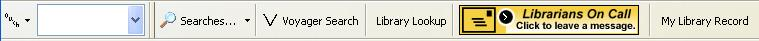
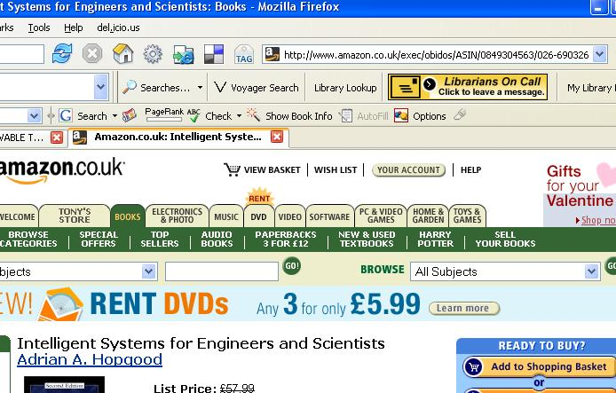
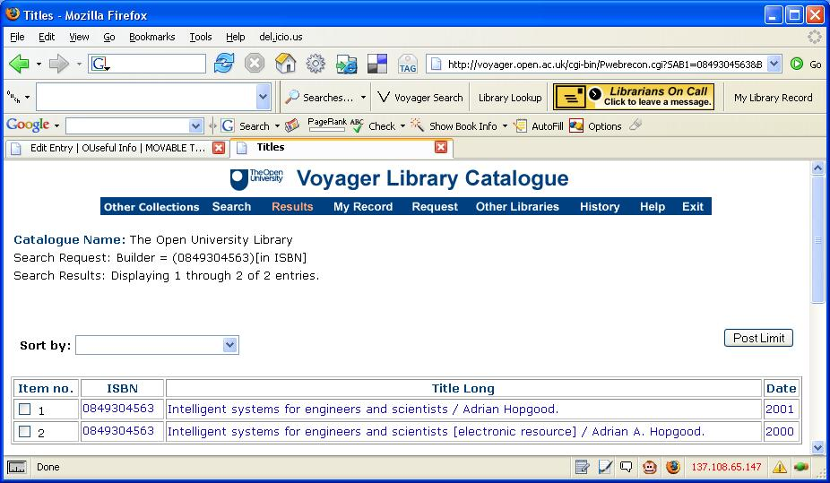
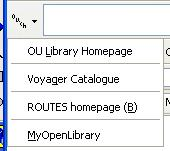

Having tried to demo my OU Library Firefox Toolbarthe other day, only to find that it couldn't be installed in Firefox 1.5, I've made the necessary tweaks and uploaded a version that should work... You can install it from here.
And just in case you need a reminder, here's what it looks like:

The Library Lookup is, of course, Udell's - if there's a URL in the browser URL address line, as for example when looking at a book on Amazon:

...you can just click on the Library lookup button and that book will be looked up in the OU library catalogue:

There are a few quick links in the toolbar too:
